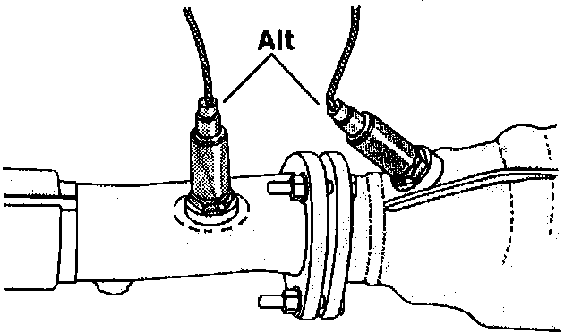
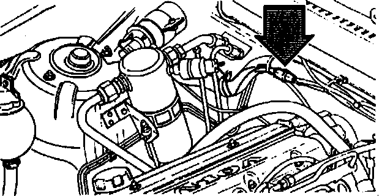
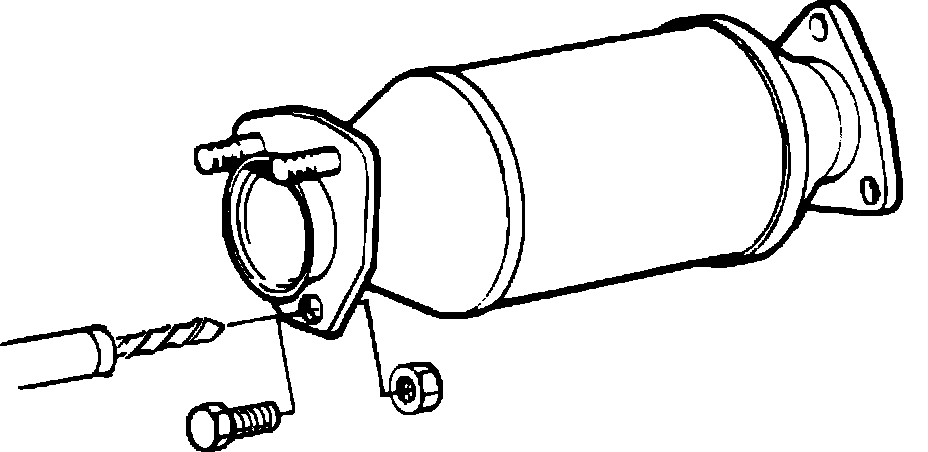
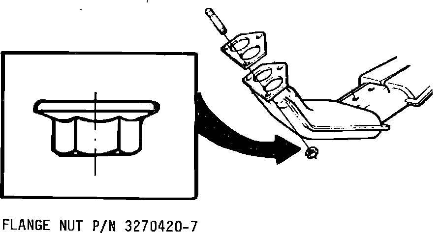
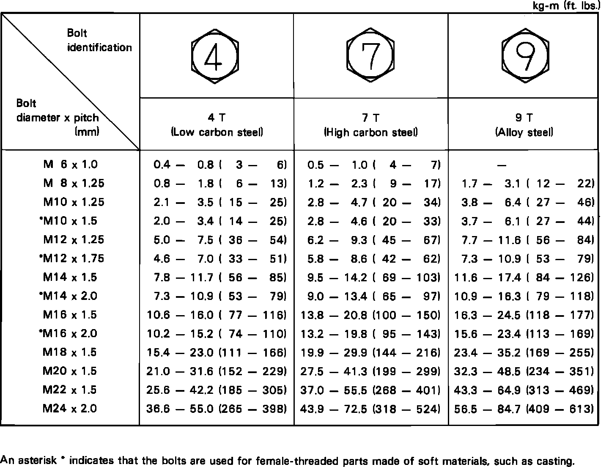

This is the B230FD non-turbo joint: the front pipe bolts straight to the cast manifold outlet on copper nuts. On the B230FT turbo the pipe bolts to the turbo instead. The 1994 940 sedan book lists that joint at 30 Nm (22 ft-lb) and calls for Volvo thread sealant 1161035-9 on any stud refitted to the turbo housing. None of that applies here.
The 1994 LEMON books cover the joint in one line: disconnect the exhaust pipe. The torque comes from a Volvo service bulletin for this joint, found in the LEMON 1985 240 B230F book. Everything the books say is used below. Steps tagged shop practice are standard technique that no book prints. Steps tagged VOC FAQ come from the Volvo Owners Club 700/900 exhaust FAQ, the figures tagged Turbobricks come from a Turbobricks thread on this exact joint, and part numbers tagged web come from parts suppliers' listings (full list at the bottom).
Tap a step to check it off. Progress is saved in this browser only. Book labor: 0.8 h for the front pipe.
The flange has 3 studs: order 3 studs, 3 nuts and 1 gasket.
| Part | Number |
|---|---|
| Flange gasket, manifold to front pipe buy the Volvo OEM part, a copper composition gasket per the FAQ; superseded by 671822; Elring 599921 is sold as header pipe to manifold web | Volvo 3531326 |
| Flange stud, M10 × 40 qty 3; older number 924077; listed for the 1994 940 non-turbo web | Volvo 978343 |
| Flange nut, M10 × 1.5 flanged lock nut qty 3. The 1985 bulletin nut 3270420-7 and today's 977211 cross-reference to the same aftermarket nut, Bosal 258-040 (M10, copper, DIN 267 Cu), which lists both plus Volvo 1378511. Never nylon-insert. Reuse is fine if the nut still drags on the stud; see the note under Installation. web | Volvo 977211 |
| Oxygen sensor, if you pull it LEMON spec | 45 Nm |
The LEMON parts page lists 2717049 as the exhaust manifold gasket. That is the manifold-to-head set, sold as 271704 for B21, B23 and B230 engines. It does not seal the downpipe joint. You only need it if the manifold comes off.
Also: penetrating oil, nickel anti-seize, a thread pitch gauge, a torque wrench that covers 50 Nm (37 ft-lb), and a propane or oxy-acetylene torch if the nuts are rusted solid.
Soak every flange nut with penetrating oil. Drive the car between soaks so the joint heats and cools, then soak again. Do this for a couple of days before the job. VOC FAQ
Work on a cold exhaust. The book's own caution: the converter burns.
Disconnect the battery negative cable. This is the first line of the manifold removal procedure in the 1994 940 sedan book.
Raise the front of the car and set it on stands. shop practice
If your car has an EGR valve, find out whether a pipe runs from it to the front pipe before you drop anything. The book says EGR was fitted to California-market cars only, and the parts list carries two front pipes: 68425651 with EGR and 68425669 without.
Find the oxygen sensor. The book puts it in or ahead of the catalytic converter on the front pipe. If the pipe has to drop farther than the lead allows, unplug the sensor at its connector on the firewall.


Loosen the downpipe bracket bolts at the bellhousing so the pipe can move. VOC FAQ
Take the flange nuts off. If one won't break loose, heat the nut with the torch and hit it with more oil. The FAQ says not to hesitate with acetylene here; one contributor broke them loose with an impact wrench rather than risk snapping studs with a breaker bar. The rear nut is the hardest to reach. VOC FAQ
If the stud starts turning with the nut, stop. Work the nut back and forth a quarter turn at a time with more oil. A stud that comes out with its nut still on is fine, since you're replacing it; one that snaps is the next section's problem. shop practice
Pull the pipe down off the studs and hang it with wire so its weight isn't on the rubber hangers. shop practice
Scrape the old gasket off both faces. The sedan book's manifold notes: check for cracks, burned or eroded areas, corrosion and damaged fasteners, and make sure the mating faces are flat and free of burrs. The same notes say heat and combustion products corrode fastener threads, so replace studs as needed.
Skip this section if the old studs came out clean and you are only changing the gasket and nuts.
Check one old stud with the pitch gauge. The stud listed for this car is M10 × 40; the copper nut sold for it is M10 × 1.5. web
Lock two nuts together on each old stud and turn the lower one to back the stud out. Heat the manifold boss, not the stud, if it fights. shop practice
Run a thread chaser or a matching tap through each hole to clear rust and carbon. shop practice
Coat the new stud threads with nickel anti-seize. The FAQ calls for high-temperature nickel anti-seize on B230 exhaust manifold nuts; the same goes here. VOC FAQ
Double-nut each new 978343 stud and turn it in until it stops at the end of its thread. Take the locked nuts off. shop practice
This joint is easier than a head stud. The manifold flange is exposed on top, so you can drill straight through it, then tap the hole for M10 or put a bolt through and nut it on the far side. That fix comes from Rob Bareiss in the Volvo Owners Club FAQ.
The B230FD book gives the same repair for the converter's pin studs: drill the damaged stud out and fit a nut and bolt, grade 5 or higher. It doesn't cover the manifold flange, but the grade floor is the one figure the book gives for a bolt-through exhaust repair.

The sedan book: with the pipe off, remove the manifold nuts and the manifold. Refit with new gaskets; if they are stamped UT, that side faces away from the head. The FAQ adds that the B230 has one gasket per runner (replace all four), the cupped washers go concave side to the manifold, and the manifold nuts retorque to 14–27 Nm (10–20 ft-lb). Nuts are Volvo 948645, washers 949362, non-turbo studs 953049. Book labor for this is 0.7 h.
Slide the new flange gasket over the studs. Clean and dry, no sealer. The book bans silicone products on any car with an oxygen sensor; they damage the sensor.
Lift the pipe onto the studs. Put anti-seize on the stud threads and start the new copper nuts by hand. shop practice
Snug the nuts a turn at a time, alternating, so the flange pulls up square on the gasket. shop practice
Torque the three flange nuts to 40–50 Nm (30–37 ft-lb), working around the flange. This is Volvo's figure from Service Bulletin Group 25 No. 105 (July 1985, US and Canada, B21/B23/B230 non-turbo), issued for leaks at the front exhaust pipe flange caused by the nuts loosening. The bulletin also says to replace the flange gasket if needed.

The Volvo Owners Club FAQ lists 22 ft-lb (30 Nm) for the same joint, and John V on Turbobricks gives 43 ft-lb (58 Nm) as a generic M10 figure. The bulletin is Volvo's own number for this joint, so use it.
Now tighten the bracket at the bellhousing. The FAQ's note on this joint: it often leaks right after installation because the pipes weren't lined up. Flange first, bracket second, lets the pipe sit where the flange puts it. VOC FAQ
Plug the oxygen sensor back in if you unplugged it. If you pulled the sensor, it goes in at 45 Nm.
Reconnect the battery negative cable and lower the car.
Start it and check the joint for leaks. The book's 10,000-mile exhaust inspection covers condition, leaks, alignment and suspension.
After the first full heat cycle, let it cool and check the nuts against the same torque. shop practice
The Owners Club FAQ says these nuts can't be reused. That is one contributor's tip with no source. NASA's Fastener Design Manual (RP-1228, 1990) says a deformed-thread locknut can be reused about 10 times before it loses its locking. The FAA's AC 43.13-1B allows reuse of self-locking nuts as long as they still meet a minimum prevailing torque, and publishes a table of those minimums for reused nuts. ISO 2320 tests all-metal lock nuts through a fifth removal.
On this joint the real limit is rust and heat, not the locking feature. Reuse a nut if it cleans up, its hex is sound and it still needs a wrench to run down the stud. Replace it if it spins on by hand, is eroded, or came off with a wrecked thread.
| Item | Spec |
|---|---|
| Flange nuts, pipe to manifold Volvo SB 25-105, July 1985, B21/B23/B230 non-turbo | 40–50 Nm 30–37 ft-lb |
| Oxygen sensor | 45 Nm |
| Manifold-to-head nuts, retorque B230F/T, VOC FAQ | 14–27 Nm |
| Front pipe, replace book labor | 0.8 h |
| Manifold gasket, replace book labor | 0.7 h |
| Bolt-through stud repair, min grade converter flange, book | grade 5 |
The B230FD book has no figure for this joint, only this generic chart. Volvo's 40–50 Nm bulletin figure overlaps the top of its 7T range and sits inside its 9T range for M10 × 1.5. The book prints kg-m with ft-lb in brackets. Top figure in each cell is Nm (kg-m × 9.807, rounded); the small figure under it is the book's own ft-lb. The asterisked M10 × 1.5 row is the one the book marks for threads in soft castings.
| Thread | 4T | 7T | 9T |
|---|---|---|---|
| M10 × 1.25 | 21–3415–25 | 27–4620–34 | 37–6327–46 |
| M10 × 1.5 * | 20–3314–25 | 27–4520–33 | 36–6027–44 |

Source: LEMON manual for the 1994 Volvo 940 L4-2320cc 2.3L SOHC VIN 83 B230FD: Catalytic Converter (Service and Repair, Locations), Exhaust System Testing and Inspection, Emission Service Precautions (Engine and Exhaust), EGR Description and Operation, Oxygen Sensor (Locations, Mechanical Specifications), Standard Torque Values, and Parts and Labor for the exhaust pipe, manifold and manifold gasket. Also the LEMON 1994 Volvo 940 Base 4D Sedan book: 2.3L 4-cyl Exhaust Manifold removal and installation, Torque Specifications, and Engine Overhaul general information on manifolds. Also the LEMON 1985 Volvo 240 L4-2.3L SOHC VIN 88 B230F book: Exhaust System Technical Service Bulletins, Exhaust - Replacement Flange Nuts (Group 25 No. 105, July 1985, superseding the September 1984 issue) and Exhaust - Flange Nuts (Group 25 No. 105A). Figures are the manual's own scans; tap one to open it full size.
Not in either book:
{kind=link}
{kind=link}
{kind=link}
{kind=link}
{kind=link}